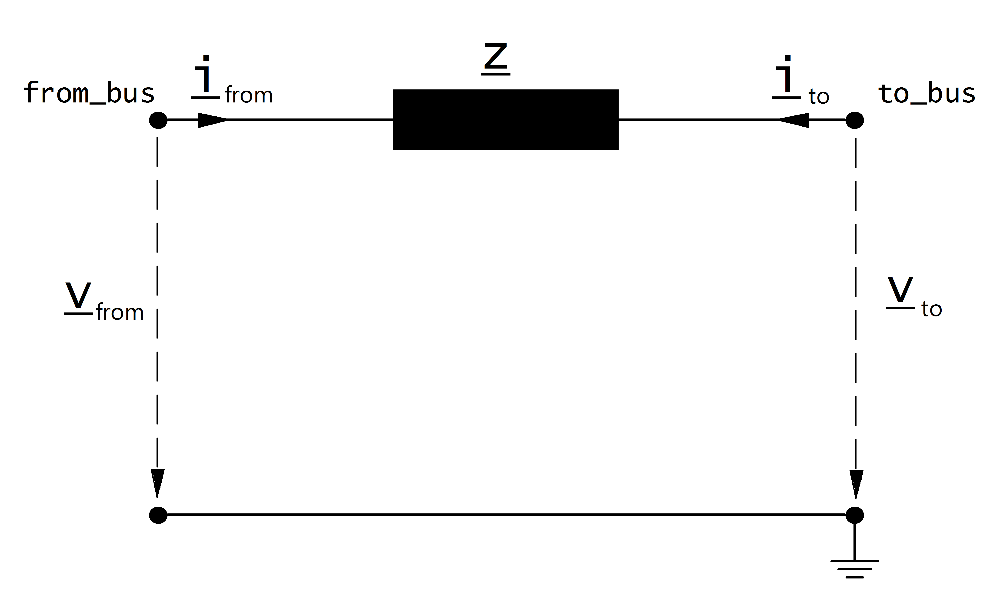

Impedance¶
См.также
Create Function¶
Input Parameters¶
net.impedance
Parameter |
Datatype |
Value Range |
Explanation |
name |
string |
name of the impedance |
|
from_bus* |
integer |
index of bus where the impedance starts |
|
to_bus* |
integer |
index of bus where the impedance ends |
|
rft_pu* |
float |
\(>\) 0 |
resistance of the impedance from „from“ to „to“ bus [p.u] |
xft_pu* |
float |
\(>\) 0 |
reactance of the impedance from „from“ to „to“ bus [p.u] |
rtf_pu* |
float |
\(>\) 0 |
resistance of the impedance from „to“ to „from“ bus [p.u] |
xtf_pu* |
float |
\(>\) 0 |
reactance of the impedance from „to“ to „from“ bus [p.u] |
sn_mva* |
float |
\(>\) 0 |
reference apparent power for the impedance per unit values [MVA] |
in_service* |
boolean |
True / False |
specifies if the imepdance is in service. |
*necessary for executing a power flow calculation.
Electric Model¶
The impedance is modelled as a longitudinal per unit impedance with \(\underline{z}_{ft} \neq \underline{z}_{tf}\) :
{kind=link}
The per unit values given in the parameter table are assumed to be relative to the rated voltage of from and to bus as well as to the apparent power given in the table. The per unit values are therefore transformed into the network per unit system:
where \(S_{N}\) is the reference power of the per unit system (see Unit Systems and Conventions).
The asymetric impedance results in an asymetric nodal point admittance matrix:
Result Parameters¶
net.res_impedance
Parameter |
Datatype |
Explanation |
p_from_mw |
float |
active power flow into the impedance at «from» bus [MW] |
q_from_mvar |
float |
reactive power flow into the impedance at «from» bus [MVAr] |
p_to_mw |
float |
active power flow into the impedance at «to» bus [MW] |
q_to_mvar |
float |
reactive power flow into the impedance at «to» bus [MVAr] |
pl_mw |
float |
active power losses of the impedance [MW] |
ql_mvar |
float |
reactive power consumption of the impedance [MVar] |
i_from_ka |
float |
current at from bus [kA] |
i_to_ka |
float |
current at to bus [kA] |